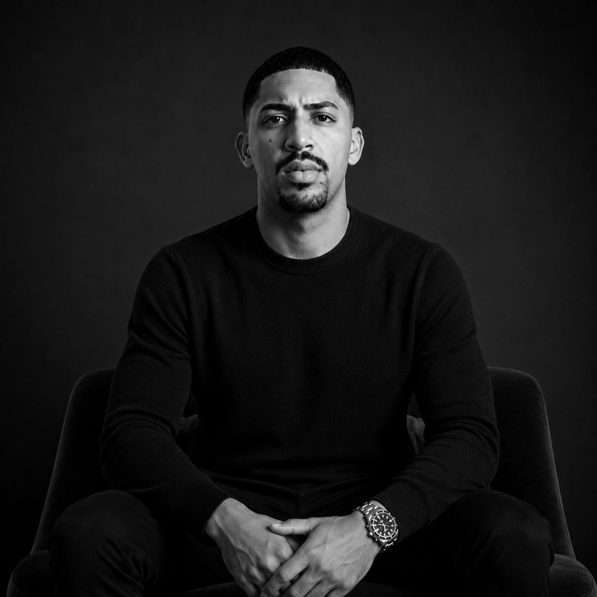
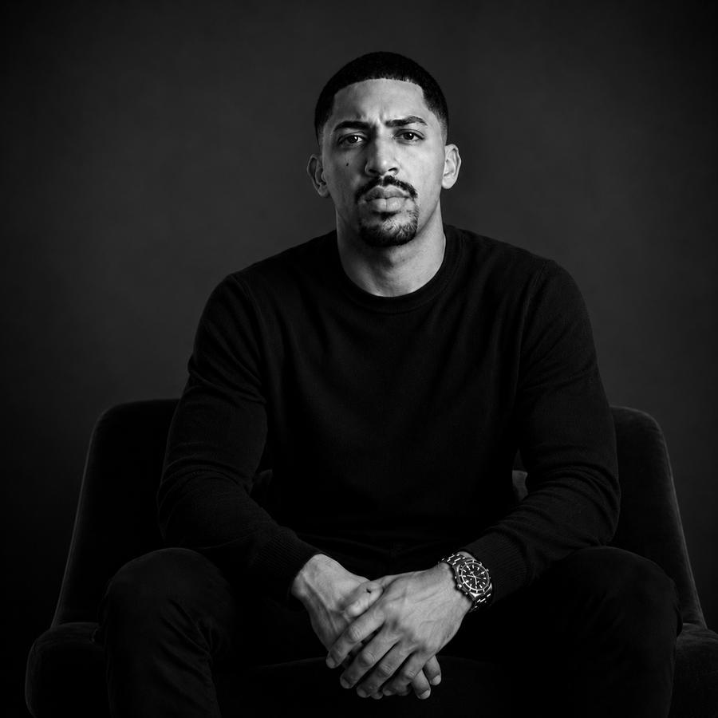
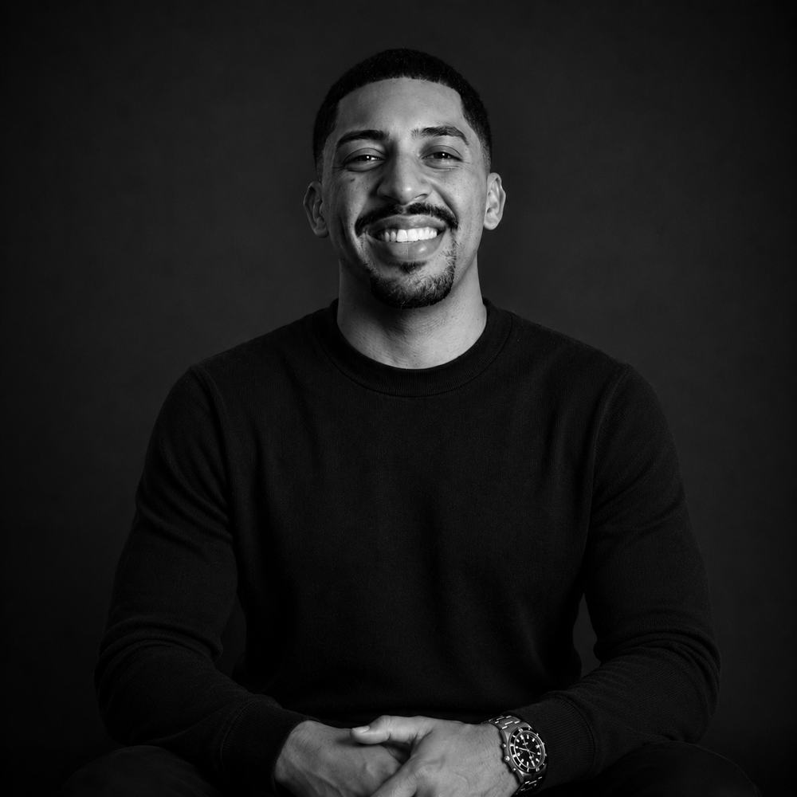

Como você deve ser percebido
Definimos o lugar que você ocupa na cabeça das pessoas e quais atributos sua imagem precisa transmitir para sustentá-lo.

Eu posiciono pessoas para que elas sejam percebidas como referência.
Assessoria estratégica para personalidades que querem construir autoridade, presença e influência nas redes sociais.
01 — Diagnóstico
É exatamente aqui que entra a minha assessoria.
02 — Tese
Estar nas redes sociais deixou de ser diferencial há muito tempo. Hoje, o que separa uma pessoa de uma referência é a percepção que ela constrói — e percepção não acontece por acaso.
A forma como você se comunica, se apresenta e se posiciona determina o valor que as pessoas atribuem ao seu trabalho antes mesmo de falarem com você. Meu trabalho é transformar sua presença digital em uma ferramenta de autoridade.

Ninguém decide o quanto você vale sozinho. Decide a partir do que consegue perceber.Kellvin Wilker
03 — Escopo
Definimos o lugar que você ocupa na cabeça das pessoas e quais atributos sua imagem precisa transmitir para sustentá-lo.
Linguagem, postura, narrativa e ritmo. A mesma informação muda de valor conforme a forma como é entregue.
Direcionamento sobre temas, formatos e bastidores: como transformar o que você sabe e o que você vive em material estratégico.
Uma presença digital reconhecível e consistente ao longo do tempo — o que faz alguém lembrar de você quando o assunto aparece.
04 — Método
Entendo quem você é, o momento em que está, o que quer alcançar e como sua imagem é percebida hoje — inclusive o que ela comunica sem você perceber.
Definimos a imagem que precisa ser construída e a mensagem central que sustenta essa imagem em tudo o que você publica.
Você recebe orientação prática de conteúdo, comunicação, postura e presença digital. Sai da dúvida sobre o que fazer e passa a executar com critério.
A estratégia é revisada e ajustada conforme você evolui. Posicionamento não é um projeto que termina — é uma construção que se mantém.
05 — Perfil
Para quem já tem algo a oferecer, mas sabe que a própria imagem ainda não comunica esse valor.
Se o seu objetivo é deixar de ser mais uma pessoa nas redes e passar a ser reconhecido como referência no que faz, essa assessoria foi desenhada para você.
06 — Trabalhos
Reposicionamento de imagem
Construção de autoridade
Direção de conteúdo

07 — Quem está por trás
Trabalho com posicionamento e construção de autoridade para pessoas que querem transformar a própria presença nas redes em um ativo profissional.
Minha experiência passa por estratégia, produção audiovisual, comunicação e construção de imagem — e é a soma dessas frentes que permite tratar imagem como decisão, e não como acaso.
O objetivo é simples e exigente ao mesmo tempo: fazer com que a imagem que você transmite esteja à altura da pessoa que você se tornou.
Kellvin Wilker
Depoimentos
“Antes eu não sabia como me posicionar. Hoje sei exatamente o que comunicar e como quero ser percebido.”
“Substitua por um depoimento real, com o detalhe específico que mudou no dia a dia da pessoa.”
“Quanto mais concreto o depoimento, mais ele convence. Peça exemplos, não elogios.”
08 — Conversar
A questão é se ela está comunicando o que você gostaria. Me conte o seu momento pelo WhatsApp e eu te digo, com honestidade, o que faria sentido no seu caso.